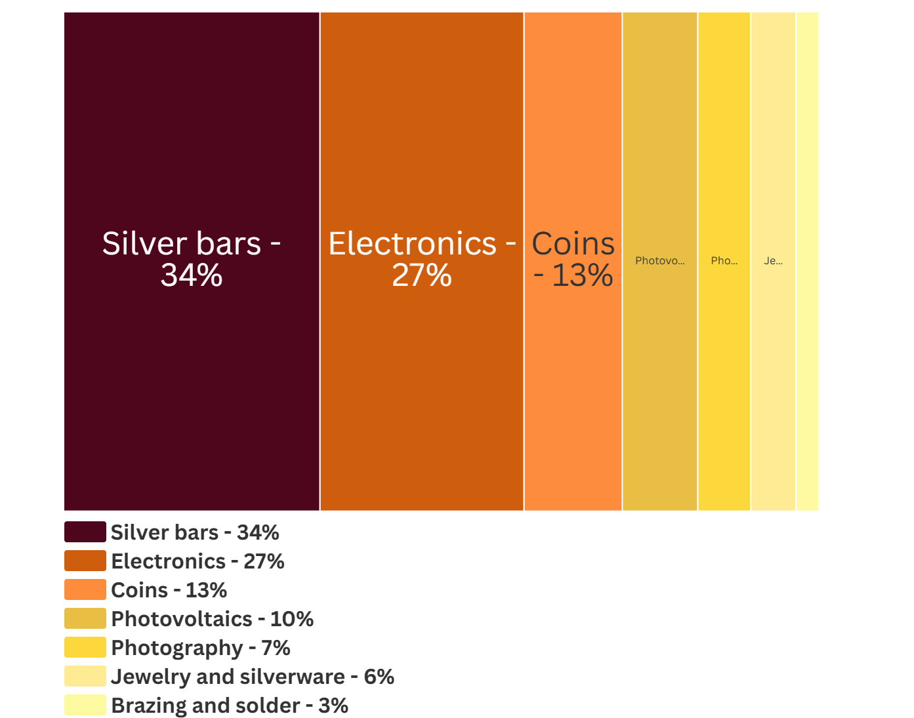
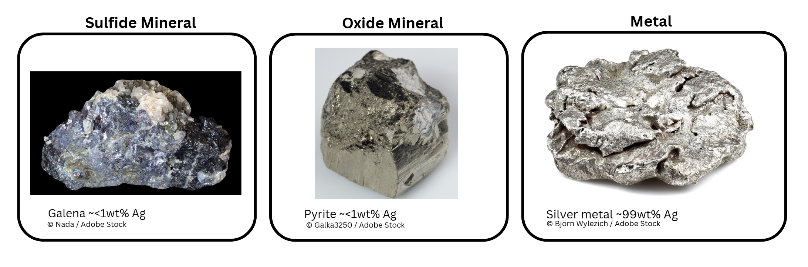

Silver is a transition metal that can occur naturally as a pure metal, as an alloy, or as a crystal in more complex minerals. The most common mineral containing silver ores include argentiferous galena and Argentinian pyrite. The first record of silver smelting and mining was in 3000 BC in present day Türkiye. By 1200 BC the lustrous metal became a primary currency along the euro-Asia diaspora. The pursuit of precious capital like silver became a major motivator for Europeans to explore west. Between 1500 and 1800, the Spaniards searched for precious goods motivated violent silver mining throughout South America. At the time, Bolivia, Peru, and Mexico supplied 85% of the worlds silver. Most of the silver was mined from veins, mineral occurrences of silver metal. During this period, the silver ore was mined with slave labor and then transported to smelters. Here, the ore was heated in the presence of mercury to purify the silver metal.
Today, over 80% of silver is recovered as a secondary product from polymetallic and porphyritic sulfide ores obtained from mining lead, zinc, gold, and copper. The silver is carried along with the primary metal concentrates that were formed from froth flotation. When the primary metal, such as copper, is removed in the electrorefining process, the waste is collected and sent to a furnace to remove base metal impurities; this produces what is called a doré metal, which has a silver content of approximately 95–98%. The resultant doré solid can be heated to a molten state in the presence of chlorine gas to further remove impurities. To achieve a 99.9% silver purity, electrolytic refining is performed. Here, direct current is applied to the silver immersed in a silver nitrate solution. The silver ions migrate to a cathode typically made of stainless steel. From here, the pure silver is mechanically separated and ready for sale.
What is silver used for?

Figure 1: Industrial uses of silver. Data source: USGS National Minerals Information Center, 2025.
What do some silver minerals look like?

Figure 2: Different types of silver containing materials.
Where are silver mineral deposits?

Figure 3: Global silver reserves as reported by the USGS. Data is from https://mrdata.usgs.gov/general/map-global.html
Where is silver mined?
Scroll with your mouse or touchpad over the tagged locations on the map to zoom in/out.
Who imports silver?
Click on the blue bubbles to see where gold is imported from.